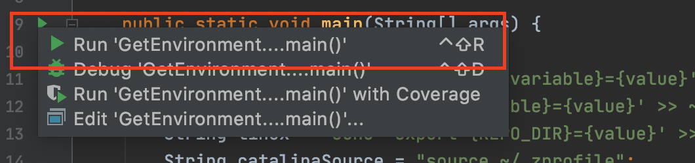

Setting Up Environment Variables in Mac OS and Linux
In IntelliJ, open the GetEnvironmentVariables class. The first few lines should look like:
// Fill in the path to your sp21-s*** folder between the quotes
public static String REPO_DIR = "";
// Fill in the path to your snaps-sp21-s*** folder between the quotes
public static String SNAPS_DIR = "";
// Fill in the type of your shell by running 'echo $0` in your terminal. It should be zsh or bash.
public static String SHELL = "";
REPO_DIR
In your terminal, navigate to your sp21-s*** folder. For example, if your repo number is 123, and you put it on your desktop, you would type:
cd ~/Desktop/sp21-s123/
Now enter pwd. This command outputs the “present working directory” (so, it tells you where you are in your machine). Copy the output, and paste it in your getEnvironmentVariables between the empty quotes here REPO_DIR = "";. For the example above, pwd will output something like:
Users/<your name>/Desktop/sp21-s123
And when pasted in GetEnvironmentVariables:
public static String REPO_DIR = "Users/<your name>/Desktop/sp21-s123";
WARNING: Your terminal may be case insensitive, which means that it may allow you to navigate into a folder on the Desktop using cd ~/desktop/.... Don’t do this. This will cause pwd to give a path where letters don’t match the case they should have. Make sure that the path you paste in is case sensitive. That is, if your folder is on your Desktop, the path you paste in should be Users/<your name>/Desktop/... and NOT Users/<your name>/desktop/....
SNAPS_DIR
In your terminal, navigate to your snaps-sp21-s*** folder. For example, if your repo number is 123, and you followed the instructions from the spec, you would type:
cd ~/snaps-sp21-s123/
Now enter pwd. Copy the output, and paste it in your getEnvironmentVariables between the empty quotes here SNAPS_DIR = "";. For the example above, pwd will output something like:
Users/<your name>/snaps-sp21-s123
And when pasted in GetEnvironmentVariables:
public static String SNAPS_DIR = "Users/<your name>/snaps-sp21-s123";
SHELL (Only for Mac Users)
In your terminal, run the following command:
echo $0
It should output either
-zsh
or
-bash
If you get a different output, run chsh -s /bin/zsh. This will change your shell to zsh.
Copy the result without the preceding dash, and paste it in your getEnvironmentVariables between the empty quotes here SHELL = "";. For the example if the output was -bash, when pasted in GetEnvironmentVariables, you should get:
SHELL = "bash";
Wrapping Up
Great job! Now it’s time to introduce these environment variables to your machine.
Run the code in GetEnvironmentVariables. You can do so, by clicking the little play button near line 14, and then choosing Run 'GetEnvironmentVariables.main()''.

For the examples above, you would get an output that looks like:
Keep reading the spec to know what to do with this output
----------------------------------------------------------
echo 'export REPO_DIR=Users/<your name>/Desktop/sp21-s123' >> ~/.bash_profile
echo 'export SNAPS_DIR=Users/<your name>/snaps-sp21-s123' >> ~/.bash_profile
source ~/.bash_profile
bash_profile may be replaced by some other file name, depending on your operating system and its version.
Copy and paste these lines in your terminal one by one. After you paste each line, hit enter. There should be no output. When you are done, close your terminal, and open it again. You should make sure that all terminal windows are closed. Then, open a new one.
Launching IntelliJ from the Terminal
In intelliJ, go to the top bar menu and choose “Tools” → “Create Command-Line Launcher…”.
In the pop-up window, click “OK”. You should now be able to launch intelliJ from your terminal. Open a new terminal window and run
idea
Verify that intelliJ launches.
You may now return back to the main lab 1 page.